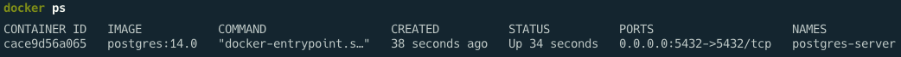
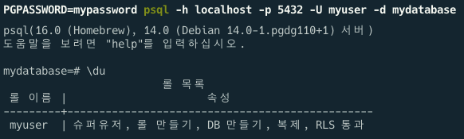
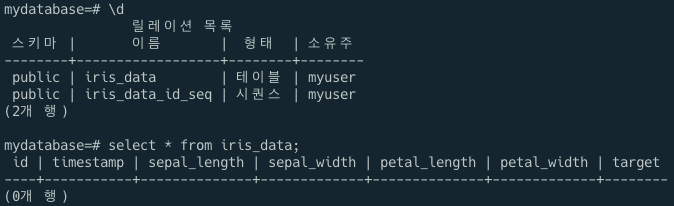

MLOps for MLE - 1
mlops
Docker 환경 설정 및 DB 설정
Summary
Docker 설치 및 PostgreSQL DB 서버 생성
DB 의 role name 과 attribute 확인
생성된 DB 에 query 를 작성하여 테이블 생성
Note
실습을 진행했던 코드를 보고싶으시다면 여기를 눌러주세요
실습
1. DB 서버 생성 및 확인
Docker 설치 후 docker run 명령어를 사용하여 DB 서버 생성
$ docker run -d \
--name postgres-server \
-p 5432:5432 \
-e POSTGRES_USER=myuser \
-e POSTGRES_PASSWORD=mypassword \
-e POSTGRES_DB=mydatabase \
postgres:14.0- -d : 컨테이너가 detached 모드로 실행
- -p : port forwarding 설정
- -e : 환경 변수 설정

psql 을 통해 PostgreSQL DB 서버 접속
-> psql은 PostgreSQL DB 서버를 확인할때 사용하는 CLI 툴
$ PGPASSWORD=mypassword psql -h localhost -p {port} -U myuser -d mydatabase- PGPASSWORD : 접속할 유저의 비밀번호
- h : 호스트 지정
- U : 접속할 유저 이름 입력
- d : DB 이름 입력

\du 를 입력해 DB 의 role name 과 arrtributes 를 확인2. DB Table 생성
psycopg2 를 이용하여 DB 접근
-> connect 함수 사용
import psycopg2
db_connect = psycopg2.connect(
user="myuser",
password="mypassword",
host="localhost",
port=5432,
database="mydatabase",
)-> DB 를 생성할 때 입력한 정보 입력
SQL Table Creation
아래와 같은 형식으로 작성
CREATE TABLE table_name (
column1 datatype,
column2 datatype,
column3 datatype,
...
);-> 이 실습에서는 scikit-learn 패캐지의 load_iris 사용
create_table_query = """
CREATE TABLE IF NOT EXISTS iris_data (
id SERIAL PRIMARY KEY,
timestamp timestamp,
sepal_length float8,
sepal_width float8,
petal_length float8,
petal_width float8,
target int
);"""Send Query to DB
Connector 에서 cursor 를 열고, cursor 에 query 전달
cur = db_connect.cursor() cur.execute(create_table_query)전달된 query 를 실행하기 위해 connector에
commitdb_connect.commit()Cursor 의 사용이 끝나면 cursor를
closecur.close()
하나의 프로세스로 만들게되면 다음과 같음
with db_connect.cursor() as cur:
cur.execute(create_table_query)
db_connect.commit()테이블 확인
psql 을 이용하여 DB에 접속하고 \d 를 입력하여 생성된 테이블들의 목록을 확인
select * from iris_data; 를 입력하면 iris_data 테이블에 있는 데이터를 확인 할 수 있음
